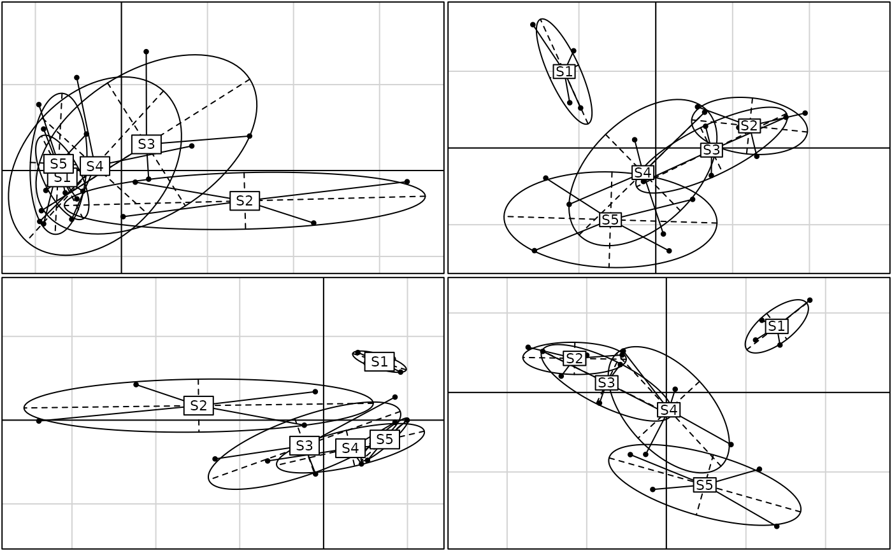

Between-Class Analysis
bca.RdPerforms a particular case of a Principal Component Analysis with respect to Instrumental Variables (pcaiv), in which there is only a single factor as explanatory variable.
Arguments
- x
a duality diagram, object of class
dudifrom one of the functionsdudi.coa,dudi.pca,...- fac
a factor partitioning the rows of
dudi$tabin classes- scannf
a logical value indicating whether the eigenvalues barplot should be displayed
- nf
if scannf FALSE, a numeric value indicating the number of kept axes
- ...
further arguments passed to or from other methods
Value
Returns a list of class dudi, subclass 'between' containing
- tab
a data frame class-variables containing the means per class for each variable
- cw
a numeric vector of the column weigths
- lw
a numeric vector of the class weigths
- eig
a numeric vector with all the eigenvalues
- rank
the rank of the analysis
- nf
an integer value indicating the number of kept axes
- c1
a data frame with the column normed scores
- l1
a data frame with the class normed scores
- co
a data frame with the column coordinates
- li
a data frame with the class coordinates
- call
the matching call
- ratio
the bewteen-class inertia percentage
- ls
a data frame with the row coordinates
- as
a data frame containing the projection of inertia axes onto between axes
References
Dolédec, S. and Chessel, D. (1987) Rythmes saisonniers et composantes stationnelles en milieu aquatique I- Description d'un plan d'observations complet par projection de variables. Acta Oecologica, Oecologia Generalis, 8, 3, 403–426.
Note
To avoid conflict names with the base:::within function, the
function within is now deprecated and removed. To be
consistent, the between function is also deprecated and
is replaced by the method bca.dudi of the new generic bca function.
Author
Daniel Chessel
Anne-Béatrice Dufour anne-beatrice.dufour@univ-lyon1.fr
Examples
data(meaudret)
pca1 <- dudi.pca(meaudret$env, scan = FALSE, nf = 4)
pca2 <- dudi.pca(meaudret$spe, scal = FALSE, scan = FALSE, nf = 4)
bet1 <- bca(pca1, meaudret$design$site, scan = FALSE, nf = 2)
bet2 <- bca(pca2, meaudret$design$site, scan = FALSE, nf = 2)
if(adegraphicsLoaded()) {
g1 <- s.class(pca1$li, meaudret$design$site, psub.text = "Principal Component Analysis (env)",
plot = FALSE)
g2 <- s.class(pca2$li, meaudret$design$site, psub.text = "Principal Component Analysis (spe)",
plot = FALSE)
g3 <- s.class(bet1$ls, meaudret$design$site, psub.text = "Between sites PCA (env)", plot = FALSE)
g4 <- s.class(bet2$ls, meaudret$design$site, psub.text = "Between sites PCA (spe)", plot = FALSE)
G <- ADEgS(list(g1, g2, g3, g4), layout = c(2, 2))
} else {
par(mfrow = c(2, 2))
s.class(pca1$li, meaudret$design$site, sub = "Principal Component Analysis (env)", csub = 1.75)
s.class(pca2$li, meaudret$design$site, sub = "Principal Component Analysis (spe)", csub = 1.75)
s.class(bet1$ls, meaudret$design$site, sub = "Between sites PCA (env)", csub = 1.75)
s.class(bet2$ls, meaudret$design$site, sub = "Between sites PCA (spe)", csub = 1.75)
par(mfrow = c(1, 1))
}

coib <- coinertia(bet1, bet2, scann = FALSE)
plot(coib)
#> Error in s.corcircle(dfxy = coib$aX, xax = 1, yax = 2, plot = FALSE, storeData = TRUE, pos = -3, psub = list(text = "Unconstrained axes (X)"), pbackground = list( box = FALSE), plabels = list(cex = 1.25)): non convenient selection for dfxy (can not be converted to dataframe)